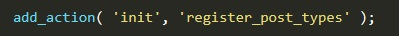
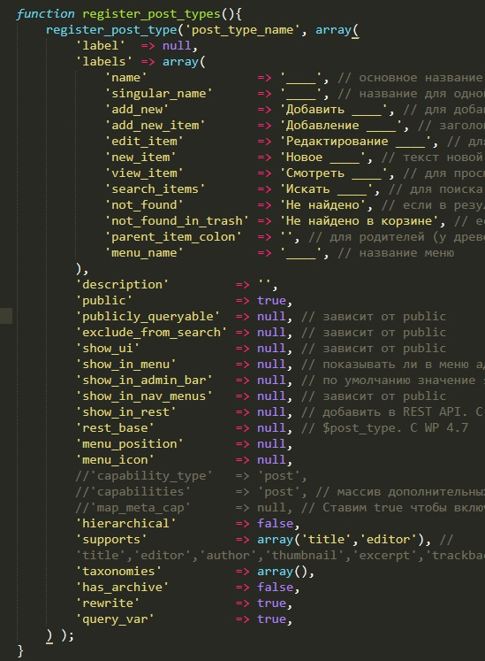
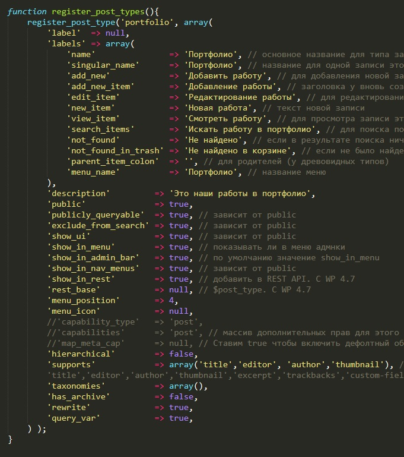
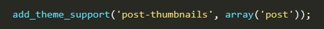
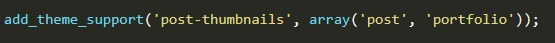
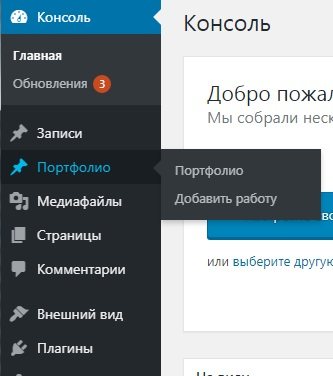
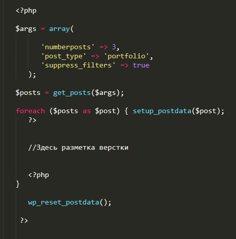
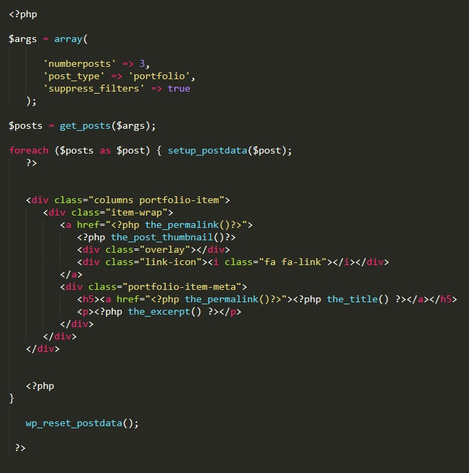

Свои типы записей
Часть 1. Создание собственного типа записей
Допустим. что нам необходимо создать свой тип записей, например оно будте называться портфолие. Т.е. в админ панели должен появится новый пункт меню, в котором будут хранится записи с типом "портфолио"
Для добавления своего типа записей используется функция:
register_post_type()
Эта функция должна выполняться во время хук события - init. Т.е. в файле funktions.php надо добавить новое действие:

Напомню что имя функции register_post_types - задается произвольно
Далее необходимо объявить нашу функцию и внутрь нее поместить функцию register_post_type()
Рассмотрим шаблон этой функции:

Сначала выглядит все страшно, но если разобраться...
Итак, функция register_post_type() имеет два входных параметра. Первый - это название нашего типа записи. Второй - это массив, который будет задавать характеристики нашего типа записи.
Отдельно рассмотрим этот массив:
- 'label' - Имя типа записи помеченное для перевода на другой язык
- labels - Массив содержащий в себе названия ярлыков для типа записи
- 'name' - основное название для типа
- singular_name - название для одной записи
- add_new - текст для добавления новой записи, как "добавить новый" у постов в админ-панели.
- add_new_item - текст заголовка у вновь создаваемой записи в админ-панели. Как "Добавить новый пост" у постов.
- edit_item - текст для редактирования типа записи.
- new_item - текст новой записи
- view_item - екст для просмотра записи этого типа.
- search_items - текст для поиска по этим типам записи
- not_found - текст, если в результате поиска ничего не было найдено
- not_found_in_trash - текст, если не было найдено в корзине.
- parent_item_colon - текст для родительских типов
- menu_name - Название меню. По умолчанию равен name.
- description - Короткое описание этого типа записи.
- public - Определяет является ли тип записи публичным или нет.
- publicly_queryable - Запросы относящиеся к этому типу записей будут работать во фронтэнде
- exclude_from_search - Исключить ли этот тип записей из поиска по сайту. 1 (true) - да, 0 (false) - нет
- show_ui - Определяет нужно ли создавать логику управления типом записи из админ-панели.
- show_in_menu - Показывать ли тип записи в администраторском меню и где именно показывать управление типом записи. Аргумент show_ui должен быть включен!
- show_in_admin_bar - Сделать этот тип доступным из админ бара
- show_in_nav_menus - Включить возможность выбирать этот тип записи в меню навигации
- show_in_rest - Нужно ли включать тип записи в REST API.
- rest_base - Ярлык в REST API. По умолчанию, название типа записи.
- menu_position - Позиция где должно расположится меню нового типа записи/ Если указать 4-9 то меню отобразится под записями
- menu_icon - Ссылка на картинку, которая будет использоваться для этого меню.
- hierarchical - Будут ли записи этого типа иметь древовидную структуру (как постоянные страницы).
- supports - Вспомогательные поля на странице создания/редактирования этого типа записи
- taxonomies - Массив зарегистрированных таксономий, которые будут связанны с этим типом записей
- has_archive - Включить поддержку страниц архивов для этого типа записей
- rewrite - Использовать ли ЧПУ для этого типа записи.
- query_var - Устанавливает название параметра запроса для создаваемого типа записи.
Так как у нас тип записи будет портфолио, то заполнение этого массива будет выглядеть так:

Обратим внимание на раздел supports. Там в списке есть такой пункт как - thumbnail. Он отвечает за возможность отображения картинки в нашей записи. Но если зайти теперь в добавление нового портфолио, то там не будет пункта где можно добавить картинку, для исправления этой картины нам надо в файле functions.php найти функцию, где мы задавали thumbnails

И там где мы добавляли тип документа, в которых появится возможность добавления изображения через запятую указываем наш новый тип - portfolio

Теперь если перейти в админ панель то здесь мы увидим новый пункт консоли:

Часть 2. Отображение собственных типов на странице
Создаем шаблон страницы. В него помещаем верстку, в этой верстке определяем где (в каком блоке) должны будут отображаться посты. Далее в этот блок вставляем код php:

В разделе куда помещается верстка копируем код html с разметкой данныйх наших постов. и заполняем содержимое блоков вертке данными нашего поста испльзуя функции
Вот как это выглядело у меня:
